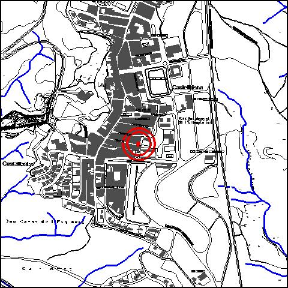
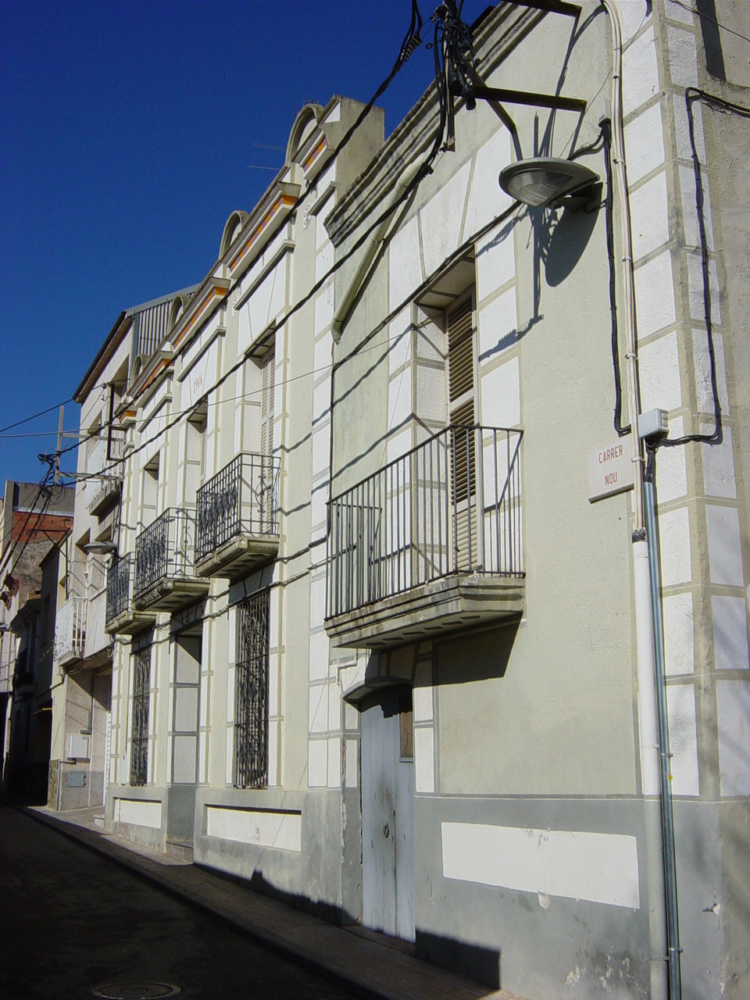

|  |  |
Nom de l’element: Cal Ramon
Clau d’identificació: A.17
Nucli o indret: Nucli urbà (c/ Nou 31).
UTM: X= 415.028, Y= 4.592.070.
Règim del sòl: sòl urbà
1.1. Època de construcció i tipologia:
Edifici del 1946, originari de finals del segle XIX (1850), amb dos cossos de diferents alçada: un més baix que dóna a la cantonada, amb una planta baixa destinada a garatge i magatzem, una planta pis destinada a habitatge i unes golfes a la part posterior. L’altre cos, lleugerament més alt en façana però sense golfes, té també planta baixa i planta pis, i està destinat tot ell a habitatge, té una composició de façana simètrica. La paret que dóna al c/ Roses està tractada com una mitgera i és quasi completament cega. El rètol sobre la balconera central del cos principal indica la data de construcció (1946). S’han afegit les golfes posteriors i s’ha substituït el paviment de la planta baixa. La façana ha estat remoçada recentment.
1.2. Estat de conservació:
Molt bo. El paviment està una mica deteriorat i es detecten certes humitats.
1.3. Ús actual:
Residencial (habitatge unifamiliar).
1.4. Accés:
Accés fàcil des del c/ Nou.
Edifici del 1946, format per dos cossos de diferent alçada.
3.1. Usos admesos:
Bihabitatge, residencial, oficines i serveis, recreatiu cultural i social, recreatiu de restauració.
3.2. Condicions d’ordenació:
Segons Pla Especial a redactar.
3.3. Accés i serveis:
Accés des del c/ Nou.
BPU (Bé Protegit Urbanísticament)